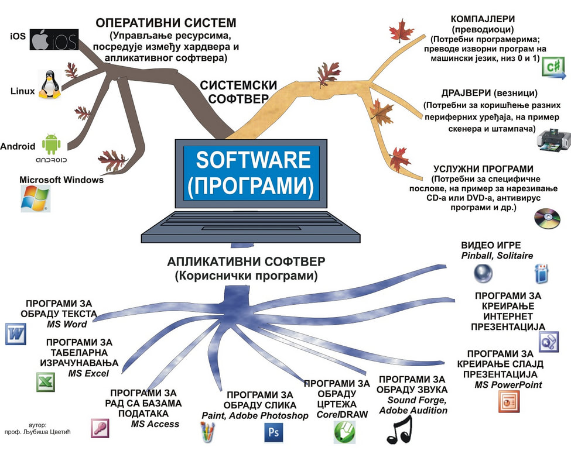

Predavanja
Ovde se nalaze materijali za časove iz predmeta Računarstvo i informatika.
Vežbe
Praktične vežbe i zadaci dostupni su u posebnom folderu.

Ovde se nalaze materijali za časove iz predmeta Računarstvo i informatika.
Praktične vežbe i zadaci dostupni su u posebnom folderu.
